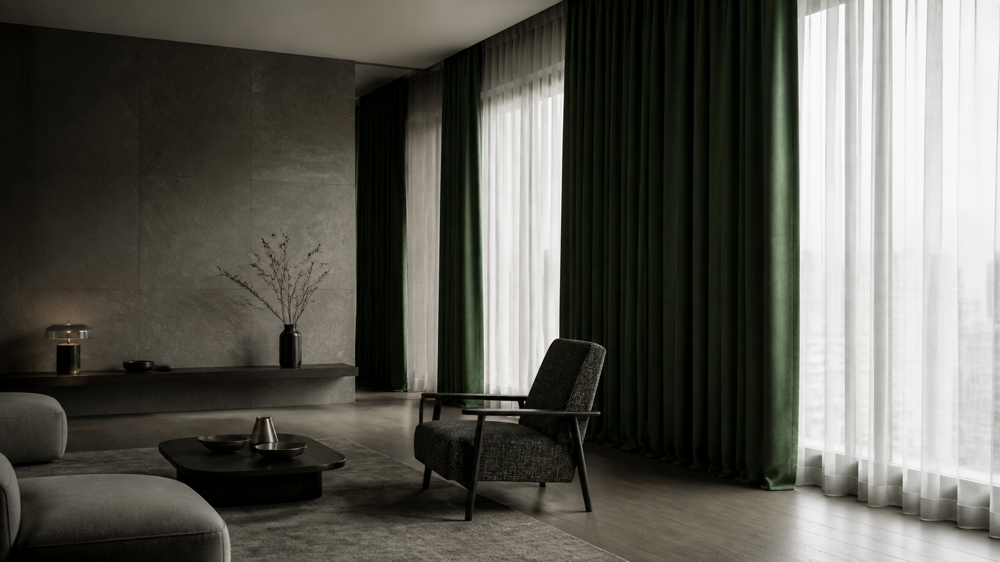
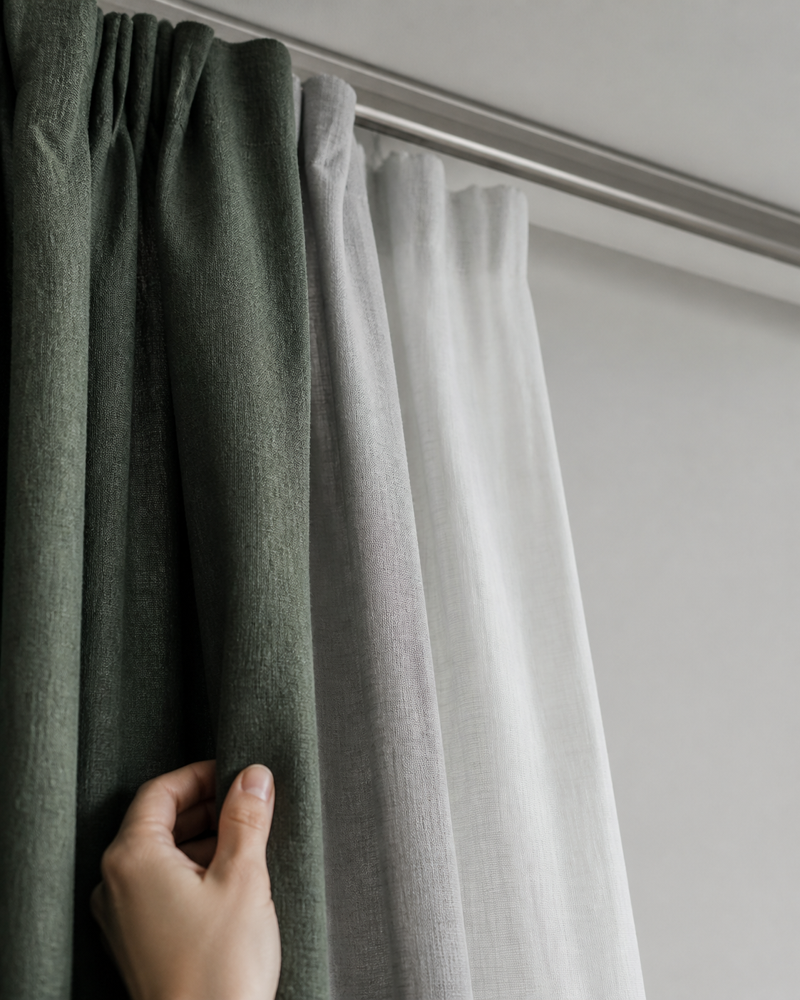
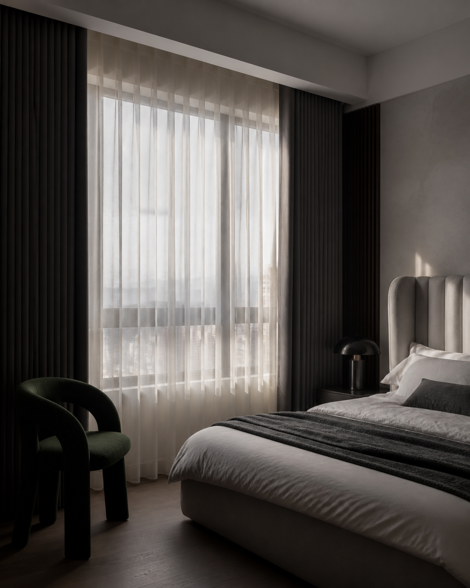
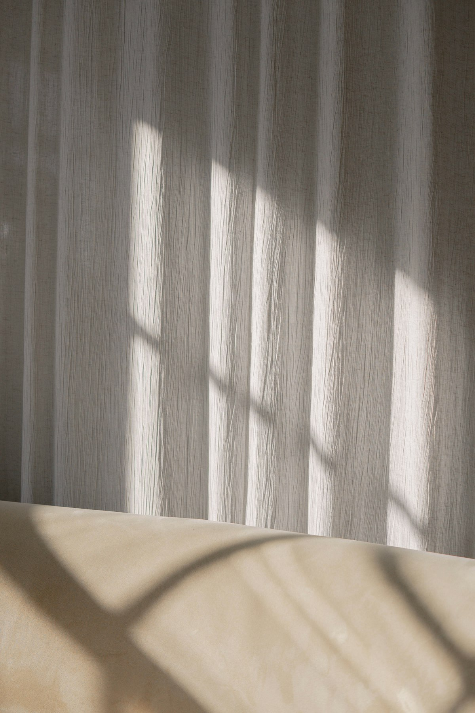

01
光線規劃
依朝向、隱私與日照選擇紗簾、遮光與軌道系統，讓每個時段都舒服。

依朝向、隱私與日照選擇紗簾、遮光與軌道系統，讓每個時段都舒服。

從沙發面料到地毯與抱枕，建立可長久生活、不費力維護的觸感層次。
SELECTED SPACES

從布料墜度到軌道位置，每一個細節都在成就空間的安定感。
和我們聊聊你的空間
不是套用風格，而是找出你想保留的光、收納與休息方式。
TRADE INTELLIGENCE · ARCHITECTURE PREVIEW
從材質來源、產品資料到提案版本，MORI 正在建立一套 evidence-first 的內部作業框架，讓跨境採購與本地空間需求能被更清楚地理解與整理。
此區為架構展示，不提供線上報價、下單、付款、物流或外部資料傳送。任何商業承諾仍須經人工確認。
已知資料與未知資料清楚分開；未知就是 unknown，不用推測補齊。
價格、交期、付款與客戶承諾，始終保留人類的最終確認。
每次提案與版本調整，目標是保留可回看、可理解的決策脈絡。
目前階段：SIMULATION / INTERNAL ARCHITECTURE PREVIEW
START WITH A CONVERSATION
先留下你的空間需求，我們會協助你整理下一步適合討論的方向。